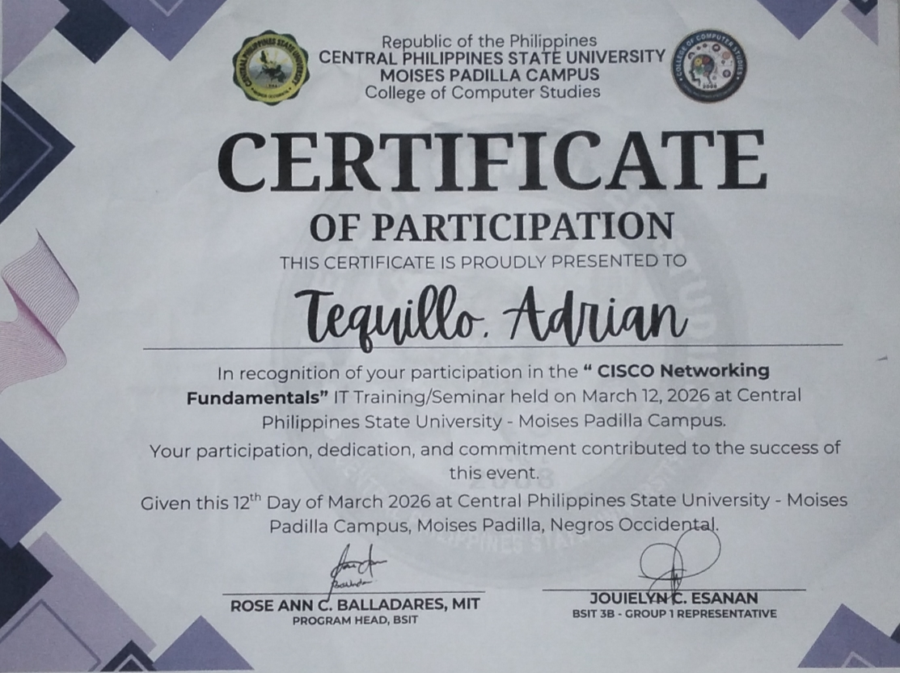

IT Student | UI/UX Designer | Technology Enthusiast
Hi! I'm Adrian N. Tequillo, an IT student with a strong passion for technology, design, and teaching. I have experience working as an **IT Instructor Assistant**, where I helped students understand basic programming, computer maintenance, and IT-related projects. This experience improved my communication skills and ability to explain technical concepts in a simple way.
I also have a background in **graphic design**, where I create visual content using tools like Canva and Figma. I enjoy helping others become more creative and confident in their design skills.
I am continuously learning and improving my abilities in coding, design, and problem-solving, with the goal of becoming a skilled IT professional and freelancer in the future.
Building responsive and modern web structures.
Logical problem solving and backend basics.
Crafting user interfaces in Figma and Canva.
Teaching and technical troubleshooting.

Here are some of the works I have done using Figma and Canva, focusing on clean layouts and user-centered design.